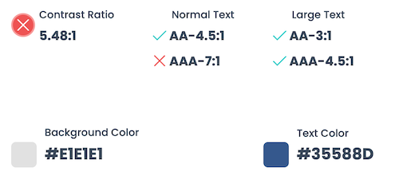

Date published: 10 March 2024 | by Sybil Mayard
Designing an accessible website involves creating a website that caters to as many types of user as possible, including those with visual/hearing impairments and disabilities. In this blog post, I provide you with a few quick tips for improving the accessibility of your site. I will be adding to this article in future, so keep checking back for further updates.
1. Contrast Ratio
The difference in brightness between two colours is called the contrast ratio. It is often used to measure how visible an element is against its background. The contrast ratio is a number ranging from 1:1 (lowest) to 21:1 (highest).
The highest ratio is achieved by placing a black element against a white element, such as black text on a white page (or vice versa). The higher the ratio, the more visible the element is against the background. This is particularly important for elements like text, icons and buttons.
When choosing the colour scheme of your website, be mindful of which colours will be placed next to each other because some colour combinations work better than others from both an aesthetic perspective and an accessibility perspective.
There are many tools available, such as Dopely's Contrast Checker, to help you determine the contrast ratio between two colours. The contrast checker shows the results for two success criteria, AA and AAA. Aim to get a green checkmark for both sizes of text in the AA criterion, and the large text in the AAA criterion. If all criteria are green, even better. A good contrast ratio would be 4.5:1 and above.
2. Text Size
The size of text on a webpage can greatly affect its readability; as text sizes decrease, so does readability. Text size is commonly measured in pixels (px). To give you an idea of text sizes, if you are reading this article on a desktop device, then the main heading would be displayed at 60px, subheadings at 25px and paragraph text at 16px.
Choose reasonable sizes for the different types of text elements on your website, keeping in mind colours and contrast ratio (as discussed above).
3. Add Alt Tags to Images
Alt (alternative) text is a short piece of text which describes an image. It is added to an image on a webpage using an alt tag. Here is an example of HTML code for an image with its alt text (“Cute puppy playing outside”):
<img src="images/puppy.jpg" alt="Cute puppy playing outside">
Alt text is helpful for visually impaired readers, as the text can be read out loud by screen readers. Alt text should be applied to non-decorative elements such as photos, diagrams, graphs, charts etc.
Another reason to add alt text is that it improves your website's SEO (search engine optimisation). Images cannot be read easily by search engines, therefore, alt text helps them to understand the meaning of your images and your webpages. For more information about alt text for SEO, please refer to point 4 of my article, How to Improve the SEO of Your Website.
4. Include Captions and Transcripts with Videos and Podcasts
If your website includes media that contains audio, such as videos and podcasts, you can help out your hearing impaired users by adding closed captions. Some platforms can generate the closed captions automatically, but if that is not possible for you, create an .srt file (SubRip Subtitle file) and upload it manually.
As an additional measure, you can also place the transcript of the video or podcast on the webpage. Bearing in mind that transcripts can be long, you could end up with a large wall of text on the page. If this is an issue, consider putting the transcript inside an accordion so users can click Read More to expand the content.
Adding transcripts to your website can also help to increase its SEO.
5. Use an Accessibility Widget
Various tools exist to further increase the accessibility of your website. For example, a widget such as UserWay can be added to your website to provide additional features which can be toggled on and off. Here are a few of the features it offers:
- Screen reader
- Contrast
- Bigger text
- Text spacing
- Cursor
- Line height
- Text align
- Saturation
When the UserWay widget is installed, you'll see the icon below at the bottom of your site. Clicking the icon reveals the menu of accessibility features.
Conclusion
Accessibility of web content is based around four principles: perceivable, operable, understandable and robust. This article discussed a few ways in which you can make your web content more user-friendly and inclusive towards users with impairments and disabilities.
For more information, take a look at the Web Content Accessibility Guidelines (WCAG) 2.1, a detailed set of recommendations on how to improve the accessibility of web content.
A useful checklist can also be found on the A11Y Project website.
If you are looking to improve the accessibility of your website, please feel free to contact me.